求平均，得
求平均，得 5.3 相关和相关系数
人的身高不能决定其体重，但我们知道二者有密切的联系。人的收入与其肉食的消费量之间也有联系。大概收入高的人，其肉食消耗量一般也会大些，但其关联的程度似不如身高体重那么密切，因为收入高而好素食的人所在多有。也有些量，例如人的姓氏笔画与其收入之间，似不存在什么值得重视的联系。这样的量在统计上称为独立的，或相关为 01。另有的量，其一的增长一般会导致另一个的下降，这样的情况称为负相关，例如空气中污染物质的增加会导致人口寿命的缩短。如果一个量的增长一般也会促进另一个的增长，则称二者为正相关。身高与体重，受教育时间与收入，是正相关的典型例子。
1按严格的统计意义，“独立”和“相关为 0”（也称不相关）之间，还存在一定的差别，但在应用上一般无关紧要。
各种量之间有无相关、相关程度的大小如何，有重要的实用和理论的意义。这问题的讨论不能只停留在定性的层次上。日常生活中常说的某某量之间关系“相当大”“不很大”“很小”，等等，只能给人一个粗略的概念。需要把其关系密切的程度加以量化，才能得到更清楚的认识并提供比较的标准。
这个问题的研究的先驱者，是英国的遗传学家兼统计学家高尔登（1822—1911），他提出了“相关系数”这个重要概念，作为两个量之间关联紧密程度的数量衡量。他是在研究父母身高与子女身高的相关性时提出这一概念的，后经卡尔·皮尔逊等学者的发扬光大，发展成一整套称为“相关分析”的理论和方法，成为统计学中一个有重要应用意义的分支学科，其中的中心概念就是相关系数。
相关系数是一个介于 -1 和 1 之间的量。两个量如有相关系数 -1，表明其有绝对的负相关，没有例外。例如，若一个人每月的收入恒定，则其当月的消费与储蓄之间，是绝对负相关，相关系数为 1。若两个量有相关系数 1，则它们之间有绝对的正相关，没有例外。如汽车以匀速行驶，其行驶时间与距离就是绝对的正相关。相关系数为 0 则表示二者没有关联，如上文提到的姓氏笔画与收入的关系。此外，还有下面两个情况。
以上是对“相关系数是什么”这个问题的一种定性的描述，下面要讨论的问题是：如何根据观察或试验所得的数据去计算相关系数。以
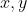
记一对变量，对它们进行了 次观察，结果为
次观察，结果为 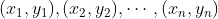
。例如 为身高，
为身高， 为体重。在人群中抽取了 个人，量得第一个人的身高体重分别为
为体重。在人群中抽取了 个人，量得第一个人的身高体重分别为 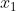
和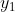
，第二个人分别为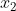
和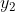
，等等。把 求平均，得
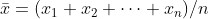
。计算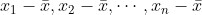
，算出它们的平方和，再开方。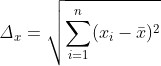
（2）用
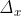
去除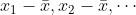
，结果记为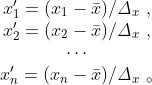
对  也做类似的处理，得
也做类似的处理，得
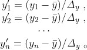
其中
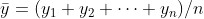
，而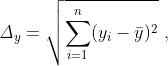
（3）最后算出
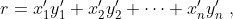
（4） 就是相关系数。
就是相关系数。
为什么这样计算的 能反映相关的程度呢？要解释这一点，先提到下面这个数字相乘中的一个现象。有一组数 2, 4, 5，它由小到大排列。另外有 3 个数 2, 4, 7，这 3 个数按任意次序排列，可排出 6 种不同的式样。
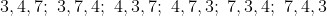
对每一种排法，将它与前一组数 2, 4, 5 依次相乘相加，可得以下 6 个数。
(2, 4, 5) 与 (3, 4, 7)：2×3+4×4+5×7=57。
(2, 4, 5) 与 (3, 7, 4)：2×3+4×7+5×4=54。
(2, 4, 5) 与 (4, 3, 7)：2×4+4×3+5×7=55。
(2, 4, 5) 与 (4, 7, 3)：2×4+4×7+5×3=51。
(2, 4, 5) 与 (7, 3, 4)：2×7+4×3+5×4=46。
(2, 4, 5) 与 (7, 4, 3)：2×7+4×4+5×3=45。
开始看不明白此计算为何目的，仔细观察上面的计算结果，我们看出，在第一组数 2, 4, 5 呈自然次序的条件下，另一组数愈是呼应这个次序，二者相应项的乘积和就愈大，反之就愈小。按 3, 4, 7 的排列与 2, 4, 5 一样，都是由小到大，故其乘积和 57，在 6 个数中也最大。反之，按 7, 4, 3 排列，与 2, 4, 5 的顺序完全相反，二者的乘积和 45，也就是 6 个数中最小的。其余情况介于上述二者之间。这个现象对任意的两组数都成立，这给我们一个启示。考察
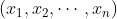
和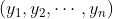
这两组数，如 和 为正相关，则 的升降趋势，应与 的升降趋势相似。正相关的程度愈大，相似的程度也愈大，因此按上面观察到的现象，这两组数的乘积和 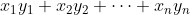
会倾向于取较大的值。反之，若 为负相关，则 的走向会与 相反，因而其乘积和会倾向于取较小之值。因此，这个乘积和可以作为 与 相关程度的度量，但有一个缺点：一个量的值与其度量原点和单位有关，按这个方法计算，如果把单位缩小到原来的 1/10，则数据将增大 10 倍，而相关系数将增大 100 倍。为免除这个任意性，我们先把度量原点取到数据的中心位置 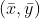
，这相当于用 取代
取代 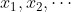
，用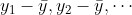
取代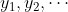
。最后，为免除单位取法上的任意性，分别用（2）（3）两式算出的 和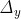
去除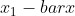
等和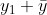
等，最后得到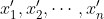
和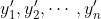
（每一组的平方和都是 1），用这两组经过变换了的数据去计算乘积和，即公式（4）的，作为相关系数。数学上可以证明：这样计算的相关系数符合在 -1 到 1 之间这个条件。下面通过一个例子来演示所讲的计算过程。设从某市男大学生中随机抽出 10 名，量测其身高和体重，结果表示为  。其中， 为身高，单位为米； 为体重，单位为千克。
。其中， 为身高，单位为米； 为体重，单位为千克。
(1.71, 65) , (1.63, 63) , (1.84, 70) , (1.90, 75) , (1.58, 60) ,
(1.60, 55) , (1.75, 63) , (1.78, 69) , (1.80, 65) , (1.64, 58) ,
算出：
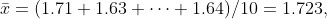
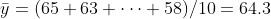
，然后算出
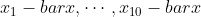
，例如，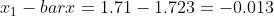
，得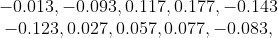
其平方和开方，即 ，为 0.3259。类似算出
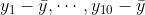
，得0.7, -1.3, 5.7, 10.7, -4.3, -9.3, -1.3, 4.7, 0.7, -6.3，
其平方和开方，即 ，为 17.835。以 ， 分别除这两组数，得
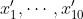
和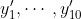
，分别为-0.040,-0.285,0.359,0.543,-0.439,
-0.377,0.083,0.175,0.236,0.255,
以及
0.039,-0.073,0.320,0.600,-0.241,
-0.521,-0.073,0.264,0.039,-0.535。
其乘积和为样本相关系数 ，
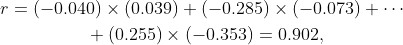
是正相关且接近 1，样本中显示的相关程度甚高。
以上讲的是有了样本如何计算相关系数。因 是由样本计算所得，故常称为“样本相关系数”。但样本只是总体的一部分，它受到偶然性的影响，故样本相关系数 中包含了偶然的成分，不一定能确实地反映总体中的相关情况。拿本例来说，要了解该市全体男大学生这个总体中身高 与体重 的相关，必须对全市每一个男大学生的身高和体重做量测，那样算出的相关系数
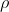
（称为总体相关系数或理论相关系数），才确切反映相关的程度。通过样本算出的样本相关系数，只能看作 的一个估计。这误差能大到多少呢？与样本量 （在此例为 10）有关： 愈大，可能的误差就愈小。具体公式在统计学中有讨论，因过于复杂，不能在此细说了。这说的是估计问题，另一个在应用上重要的问题，是检验相关的有无。有两个变量 、（如身高，体重），其理论相关系数 未知，通过样本算出样本相关系数为 ， 不为 0。有两种可能：一种是 本不为 0，即 、 在理论上存在相关；一种是 本为 0，即 、 本无关联， 之所以不为 0 纯系由于偶然性所致。到底是哪一种情况呢？这要看 的绝对值  大到何等限度 2。如 较小，就不能否定
大到何等限度 2。如 较小，就不能否定 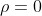
（、 不相关）的假设。若 大过一定的限度，就否定 ，而按 的符号判定 、 是正相关还是负相关。问题是这个界限如何定。这在统计学上是很复杂的问题，我们只在表 5.5 中列出一部分的结果，这表是对显著性水平 0.05 制定的。2一个数去掉符号称为其绝对值，如 3.1 的绝对值为 3.1，-3.1 的绝对值也是 3.1，如人走路，向东行为正，西行为负。绝对值就是只管你走了多远而不管方向。
表 5.5 相关系数的 0.05 界限值
| 样本量 | 10 | 20 | 30 | 40 | 50 | 60 | 70 | 80 | 90 | 100 |
| 界限值 | 0.63 | 0.42 | 0.35 | 0.30 | 0.27 | 0.25 | 0.23 | 0.22 | 0.21 | 0.19 |
例如，你抽的样本有 10 个（样本量为 10），则算出的样本相关系数绝对值 必须大于 0.63，才能否定 （即 、 不相关）的假设。如果样本量为 100，则 只需大于 0.19 就行。其所以如此，是因为样本愈少，受偶然性的影响就愈大， 作为 的估计的可信度就愈低，因而需要 是很大的值，才能使我们觉得有理由判断 不为 0。就上例而言， 达到 0.909，远超过表中相应于样本量 10的界限值 0.63。事实上，即使把显著性水平的要求提高到 0.01， 的值仍超过界限 0.76。
在一些实际问题中，有关的因素或者不是以数量的形式表述，或者虽可以用数量形式表述，但已按这数量划分了类别。前者如一个人是否吸烟（分两类），是否患某种疾病，是男是女，是否习惯于用左手之类；后者如将人的收入分成富裕、小康等类别。在这种情况下，相关性的计算不能沿用前面的公式（4）。限于篇幅，此处不能深入讨论这个问题，只举例讲述一下如何去检验因素之间有无关联。
为考察性别与使用左手的习惯有无关联，美国有人在 1962 年抽样调查了 6672 人，结果如表 5.6 所示。
表 5.6 1962 年美国对男女使用左右手情况的调查结果
|
| 男 | 女 | 合计 |
|---|---|---|---|
| 使用右手 | 2780 | 3281 | 6061 |
| 使用左手 | 311 | 300 | 611 |
| 合计 | 3091 | 3581 | 6672 |
问题是要判断使用左手的习惯与性别有无关联。按我们在上节讲过的理由，我们立下一个假设，即“使用左手的习惯与性别无关”，然后看是否有足够的根据否定这个假设。按表中的数据，有
男右 / 男左 = 2780/311，女右 / 女左 = 3281/300
二者之差的平方，即
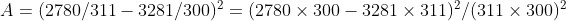
是一个反映数据与假设（与性别无关）的差异的合适指标。于是我们可以在  超过某个界限时，否定假设。这么做的困难是界限不好定。理论上的研究表明，若把 如下做适当的修改，
超过某个界限时，否定假设。这么做的困难是界限不好定。理论上的研究表明，若把 如下做适当的修改，
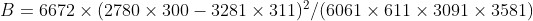
，则可以使用表 5.4 提供的界限，用
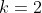
一栏。修改的内容，是把的算式中的分母改为表 5.6 中除右下角以外的 4 个合并数的连乘，再将结果乘以总合计数，在此例中为 6672。此例计算结果为
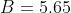
。查表 5.4 中 一栏，看出 值超过 0.05 对应的界限而未超过 0.01 的界限，意思是，如果否定假设（即认为用左手的习惯与性别有关），搞错的机会小于 0.05，但大于 0.01。
值超过 0.05 对应的界限而未超过 0.01 的界限，意思是，如果否定假设（即认为用左手的习惯与性别有关），搞错的机会小于 0.05，但大于 0.01。从表 5.6 中的数据算出，男、女性的“左手率”分别为 311/3091 ≈ 0.1 和 300/3581 ≈ 0.08，有两个百分点的差距。上面的检验也证实，这个差距是本质的而不能委之于偶然性。这里面的原因何在，这是要由心理学家、生物学家等相关研究者去研究的问题。数据的统计分析只是在表面上揭示了关联性的存在，回答不了“所以然”的问题。有一种说法认为，由于用左手不符合社会习惯，女性对此比较敏感，因而更留意矫正。
也就是说，差异是由于社会或心理的原因而非生理原因。
作为第二个例子，考察 1936 年在瑞典调查的 25 263 对夫妇。按其所生小孩数及其收入分类，结果为表 5.7 所示。
表 5.7 1936 年瑞典对 25 263 对夫妇所生小孩及其收入调查结果
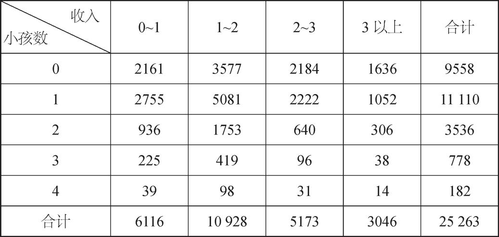
表 5.4 中的收入是以千瑞典克朗为单位的。粗略看这个表得出的印象是，收入愈少的夫妇小孩愈多。但这是实质的还是由数据的偶然性所致？处理这个问题的办法与上例一样：立下一个假设，即“小孩数与收入无关”，然后看数据是否给它足够的支持。我们总是把“效应不存在”取为假设，原因是我们不想在证据不充足的情况下声称收入与小孩数确有关联。
检验这个假设所涉及的计算与上例相似，但大为复杂化了。取表中 20 个数据（合计数以外的）中任一个，例如 3577。此数在横、竖两个方向对应的合计数，分别为 9558 和 10 928，总合计数为 25 263，计算 值
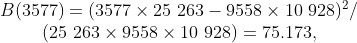
对 20 个数据中每一个都做这个计算，再把结果相加，得出总的 值，然后把它与表 5.4 中的值比较，但要查
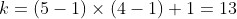
那一栏，注意 5、4 分别是两种分类的类别数。表 5.4 未提供
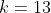
的数据，查更仔细的统计表，得出对 ，相应于 0.05、0.01、0.001 的界限值分别为 21.026、26.217 和 32.909。仅（3577）一项已大于 32.909，故其余的项已不必再算。结论是：小孩数与收入的关联高度显著。如果我们从这组数据做出“小孩数与收入有关联”的结论，犯错误的概率不到千分之一。以后有许多统计资料都证实了这一点。但是，是因多生而导致贫困，还是贫困导致多生，就不是单由这一数据分析所能回答的问题。